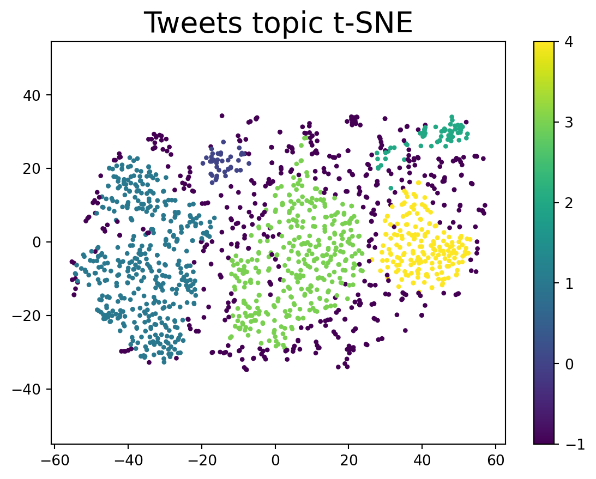
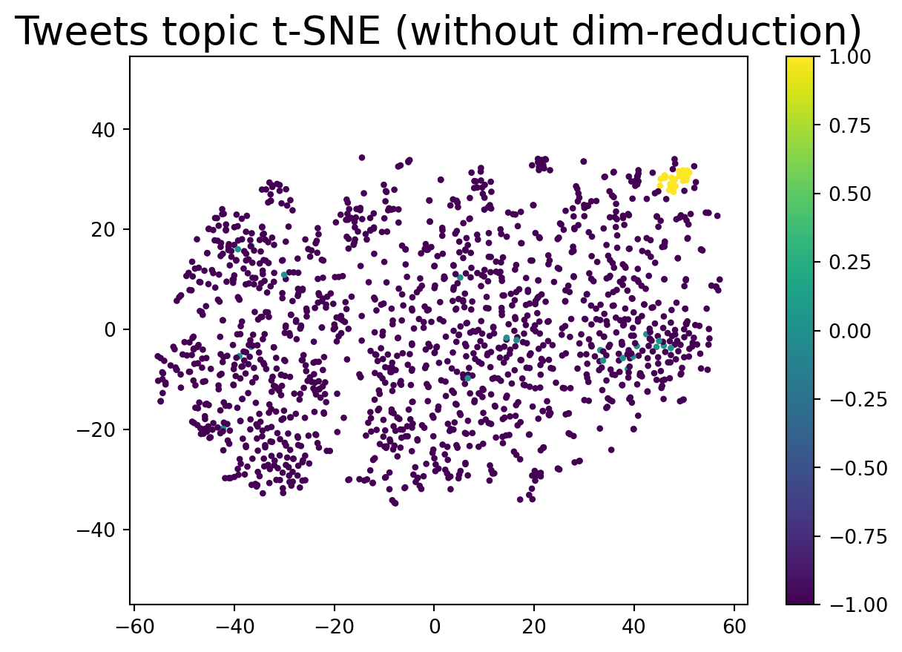

Code
from datasets import load_dataset
dataset = load_dataset("cardiffnlp/tweet_topic_single", split="train_2021")
embeddings = OpenAIEmbeddings(chunk_size=1000).embed_documents(dataset["text"])Clustering is unsupervised machine learning for not having a target variable or class label. Clustering takes unlabeled data as input and group them into several clusters based on certain similarities. They are many types of clustering methods, let’s take a look at some examples:

Partitioning clustering is a method of clustering data points into a set number of groups, while hierarchical clustering is a method of creating a hierarchy of clusters, with each cluster containing a subset of the data points. Partitioning clustering is typically faster than hierarchical clustering, but hierarchical clustering can produce more accurate results.
Agglomerative: A bottom-up approach where each data point starts in its own cluster, and pairs of clusters are merged as one moves up the hierarchy.
Divisive: A top-down approach starting with all points in one cluster and recursively splitting them into smaller clusters.
We can understand this algorithm by thinking of our data points to be represented as a probability density function. Naturally, in a probability function, higher density regions will correspond to the regions with more points, and lower density regions will correspond to the regions with less points. In clustering, we need to find clusters of points, i.e the regions with a lot of points together. More points together mean higher density. Hence, we observe that clusters of points are more like the higher density regions in our probability density function. So, we must iteratively go from lower density to higher density regions, in order to find our clusters.

Clustering can be used for a variety of tasks, such as grouping similar items together for recommendation systems, identifying customer segments for marketing purposes, or detecting anomalies in data.
HDBSCAN stands for Hierarchical Density-Based Spatial Clustering of Applications with Noise, which is a a density based (hierarchical) clustering algorithm.
First, let’s retrieve some Twitter post data from Huggingface and use OpenAI to obtain the embeddings for clustering.
from datasets import load_dataset
dataset = load_dataset("cardiffnlp/tweet_topic_single", split="train_2021")
embeddings = OpenAIEmbeddings(chunk_size=1000).embed_documents(dataset["text"])Check the size of embeddings:
tensor=np.array(embeddings)
tensor.shape(1516, 1536)Since the embeddings are of very high dimensions, we will perform a simple dimension reduction technique.
import numpy as np
import pandas as pd
# For plotting
from matplotlib import offsetbox
import matplotlib.pyplot as plt
import seaborn as sns
from sklearn.manifold import TSNE
tsne = TSNE(random_state = 1, n_components=2,verbose=0).fit_transform(tensor)
tsne.shape(1516, 2)Next, we preprocess the data into a cleaner dataframe and apply HDBSCAN to this 2-dimensional data to obtain the cluster labels.
cluster = hdbscan.HDBSCAN(min_cluster_size=20, prediction_data=True).fit(tsne)
df = pd.DataFrame({
"tweet": dataset["text"],
"label": dataset["label_name"],
"cluster": cluster.labels_,
})
#df = df[df["cluster"] != -1] #remove outliers
df.head(5)| tweet | label | cluster | |
|---|---|---|---|
| 0 | Barbara Bailey is the queen of broadcast news ... | pop_culture | -1 |
| 1 | start the 20-21 school year off POSITIVE! let’... | daily_life | -1 |
| 2 | Worth watching at least the 1st 10mins if I wa... | pop_culture | -1 |
| 3 | There s regular people and then there s {@Bail... | pop_culture | 3 |
| 4 | Up with new grace, truly sorry on behalf of {@... | pop_culture | -1 |
We can use ChatGPT to understand our clusters better by prompting ChatGPT to provide keywords and a short description for each cluster.
from openai import OpenAI
client = OpenAI()
def cluster_summary(df, sample_size=3):
summary = []
for i in tqdm(df['cluster'].unique()):
sample = df[df['cluster']==i].sample(sample_size, random_state=1)
s=sample[["tweet"]].to_dict(orient="records")
print(f'\nAsking the LLM for a summary for cluster indexed {i}. \n')
content = f"""You will be given a dataset with some tweets. You need to identify the category for those given tweets and shortly describe it. Tweets: {s}"""
print("Ground truth labels: "+ ", ".join(sample["label"].to_list()))
response = client.chat.completions.create(
model="gpt-3.5-turbo",
messages=[
{"role": "user", "content": content}],
temperature=0.5,
max_tokens=64,
top_p=1
)
print(response.choices[0].message.content)
summary.append(response)
cluster_summary(df,3) 0%| | 0/6 [00:00<?, ?it/s] 17%|█▋ | 1/6 [00:02<00:10, 2.16s/it] 33%|███▎ | 2/6 [00:04<00:09, 2.31s/it] 50%|█████ | 3/6 [00:07<00:08, 2.70s/it] 67%|██████▋ | 4/6 [00:09<00:04, 2.45s/it] 83%|████████▎ | 5/6 [00:11<00:02, 2.31s/it]100%|██████████| 6/6 [00:13<00:00, 2.14s/it]100%|██████████| 6/6 [00:13<00:00, 2.28s/it]
Asking the LLM for a summary for cluster indexed -1.
Ground truth labels: science_&_technology, pop_culture, daily_life
Based on the given tweets, here are the identified categories and their descriptions:
1. E-commerce Feature Request:
- Description: The tweet suggests a feature request for an online store. The user wants to receive email notifications when certain items are back in stock. They also compliment the website redesign.
- Category: E
Asking the LLM for a summary for cluster indexed 3.
Ground truth labels: arts_&_culture, daily_life, pop_culture
Based on the given tweets, the categories and their descriptions are as follows:
1. Astronomy and Events: The first tweet mentions the winter solstice and the great conjunction, indicating an interest in celestial events and how to observe them.
2. Personal Updates: The second tweet indicates that the user and someone else have been productive
Asking the LLM for a summary for cluster indexed 4.
Ground truth labels: pop_culture, pop_culture, pop_culture
Based on the given tweets, the categories and their descriptions are as follows:
1. Music Promotion: The first tweet seems to be promoting the release of a new music teaser by an artist named Phoenix Morissette. It suggests that the artist has recently released new music and encourages followers to listen to it.
2. Music
Asking the LLM for a summary for cluster indexed 1.
Ground truth labels: sports_&_gaming, sports_&_gaming, sports_&_gaming
The given tweets can be categorized as follows:
1. Tweet 1: Category - Sports/Fencing
Description: The tweet mentions Lee Kiefer dominating in the semifinals of a fencing event at Tokyo 2020. The tweeter wishes good luck to Notre Dame Fencing for the gold medal match.
2
Asking the LLM for a summary for cluster indexed 2.
Ground truth labels: pop_culture, pop_culture, pop_culture
The category for the given tweets is "BTS-related updates and achievements". These tweets are discussing the views and achievements of BTS's music videos, such as "Permission to Dance" and "Butter". They also mention hashtags related to BTS, like #BTS, #ARMY, #KCAMexico,
Asking the LLM for a summary for cluster indexed 0.
Ground truth labels: sports_&_gaming, sports_&_gaming, sports_&_gaming
Category: Sports
Description: The given tweets are related to sports, specifically boxing and mixed martial arts. The first tweet discusses a fight between Loma and Teofimo Lopez, with the tweeter expressing their opinion on the outcome and performance of the fighters. The second tweet shows support for Deji, who is aFinally, let’s visualize our clusters to see how HDBSCAN works!
plt.scatter(tsne[:, 0], tsne[:, 1],s=5, c=df["cluster"])
plt.gca().set_aspect('equal', 'datalim')
plt.colorbar()
plt.title('Tweets topic t-SNE', fontsize=20);
We can also visualize the clustering results without dimention reduction, let’s see how that works!
cluster = hdbscan.HDBSCAN(min_cluster_size=20, prediction_data=True).fit(embeddings)
df1 = pd.DataFrame({
"tweet": dataset["text"],
"label": dataset["label_name"],
"cluster": cluster.labels_,
})
plt.scatter(tsne[:, 0], tsne[:, 1],s=5, c=df1["cluster"])
plt.gca().set_aspect('equal', 'datalim')
plt.colorbar()
plt.title('Tweets topic t-SNE (without dim-reduction)', fontsize=20);